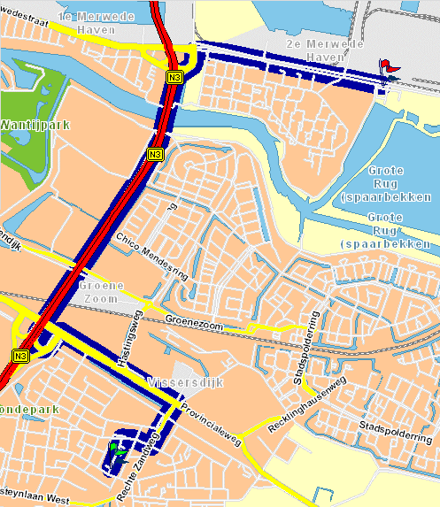

| Datum: | 12 juni 2004 |
|
| Tijd: | vanaf 17.00 uur | |
|
Plaats:
|
Biesbosch Centrum
Dordrecht Huiscafé 'De Biestro' Baanhoekweg 53 3313 LP Correct Tel: 078-630 53 64 |
|
|
Na het succes van
de vorige keer wordt het na vier jaar weer eens tijd.
Per persoon worden
4 consumptiebonnen verstrekt. Grotere dorst moet voor eigen rekening gelest
worden.
De kosten voor deze
reunie bedragen € 15.00 per persoon, te voldoen door een ieder van de eerste
en tweede generatie. (voorbeeld: Bas en Teuna betalen, Ad en Conny
betalen, Sam betaald niet )
rek. no 3230.18.025 |
||
|
Wie komen er?
Tot nu toe hebben
wij van de volgende personen begrepen dat zij naar de Reunie op 12 juni
komen. |
||
|
Bas en Teuna Vermeij Anthonie, Antine, Cordian en Marije Vermeij Ad, Conny en Sam Vermeij Annelies, Joran en Timo Vermeij (Marco gedeeltelijk) Teun en Dien de Jong Lies de Jong en Gert Jan Wim de Jong Gerrit Klootwijk en Riet Nico, Hanny en Suzanne Groenendijk Ilze Groenendijk en Michel Richard, Els, Wesley en Whitney Pieper Gerry Vermeij Gerrit, Lieseth, Maarten en Joost van Asch Nico, Marian, Demy en Lizzy Vermeij Janny Vermeij Ton, Pine, Annabel en Marieke Vermeij |
Jacob en Tamar Vemeij Lisa en Rebecca Vermeij met aanhang Liesbeth, Karel, Micha, Joël, Thirza, Nathan en Timon Stiphout Rinze + vriendin, Josje, Marie en Thera Vermeij Rudolf Vermeij Peter Vermeij en vriendin. Nel van de Velde Tony, Anja, Niene en Maike van de Velde Bert, Romy, Gijs en Brecht van de Velde Henny Vermeij Fred, Ellis, Jesse en Dagmar Stoffer Jacco, Angelique, Daan, Coen en Mees Vermeij Gils en Marry Kloppert Hans Kloppert Marcel en Mariëlle Kloppert Ton Kloppert |
|
| Links: |
|
|
|
Hoe kom ik er? |
||
|
 |
||